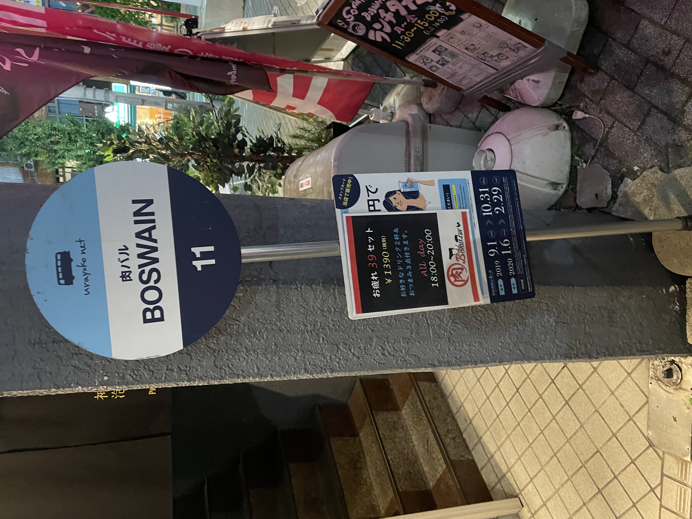

1つ目

1つ目の写真は10/4に神大から横浜駅へ帰り道で撮影したものです。
一見バスでも停まるのかな、なんて名前のバス停かなと思うかも知れませんが、
しっかりとお店の看板になっています。
またこの場所付近のお店はこのバス停型の看板を使用していました。
そこもまたおもしろいですね！
一見バスでも停まるのかな、なんて名前のバス停かなと思うかも知れませんが、
しっかりとお店の看板になっています。
またこの場所付近のお店はこのバス停型の看板を使用していました。
そこもまたおもしろいですね！
2つ目
２つ目は駅の看板です。どちらも2年前に撮影したものです。
看板と言っても1枚目の浅草の方は多少昔の感じが感じられる特徴的な建物が入り口になっていていいですね！
2枚目のやつは駅がアニメとのコラボ仕様になっているものです。普段のとはちょっと見た目を変えると雰囲気もかわったりしておもしろいですね！
看板と言っても1枚目の浅草の方は多少昔の感じが感じられる特徴的な建物が入り口になっていていいですね！
2枚目のやつは駅がアニメとのコラボ仕様になっているものです。普段のとはちょっと見た目を変えると雰囲気もかわったりしておもしろいですね！
3つ目

3つ目は愛知県岡崎のSAです。
これは大学生になる前の春休みに撮影したものです。
なんともおもちゃの中に入っていくような、また、テーマパークの入り口のような感じがして可愛らしさやユーモアが感じられるものです。
とても印象的なデザインをしているので一度寄るだけでも記憶に残りやすいのではないでしょうか。
これは大学生になる前の春休みに撮影したものです。
なんともおもちゃの中に入っていくような、また、テーマパークの入り口のような感じがして可愛らしさやユーモアが感じられるものです。
とても印象的なデザインをしているので一度寄るだけでも記憶に残りやすいのではないでしょうか。